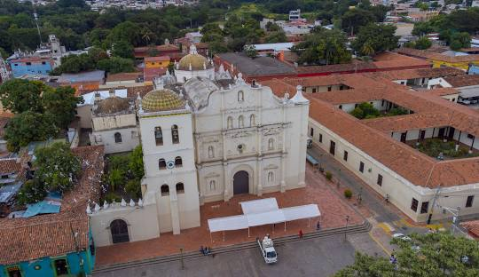

<!DOCTYPE html>
<html> </html>
<head> </head>
<meta chaster="UTF-8">
<title> </title>
<link> 
<body>
    <h1>COMAYAGUA</h1>
    <P>Una ciudad para visitar, invertir y vivir</P>
    
<h2>Descripcion</h2>
<P>Comayagua es un departamento, municipio y antigua capital de Honduras
     fundada en 1537, antigua capital del país, famosa por su arquitectura barroca y colonial, 
     calles empedradas y el reloj árabe más antiguo de América en su catedral. </P>
     <h2>Actividades</h2>
     <ul>Visitar el laberinto</ul>
     <ul>Cuevas en taulabe</ul>
     <ul>Visitar el reloj de la catedral</ul>
     <ul>Visitar el paseo la Alameda</ul>
     <ul>Visitar las alfombras en semana santa</ul>
     <ul>Visitar el Museo Regional de Comayagua</ul>
     <ul>Visitar la feria navideña</ul>
     <h2>Ubicacion</h2>
     <p>Ubicada en la region central de Honduras</p>
</body> 
<footer>2026 Ian Yahir Hernandez Gamez</footer>
